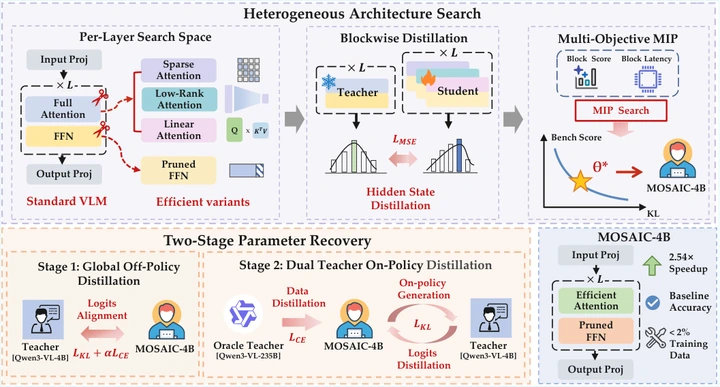
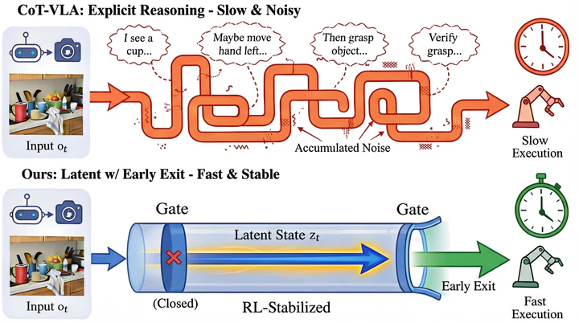
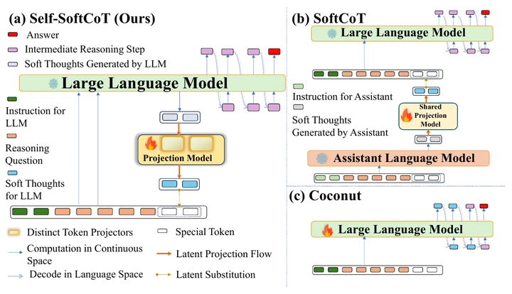
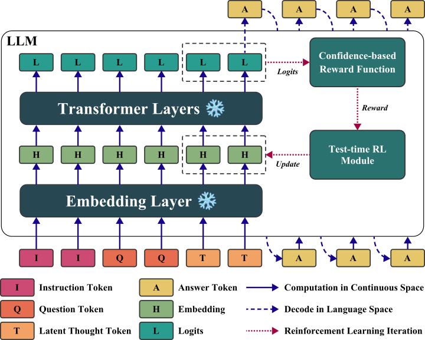
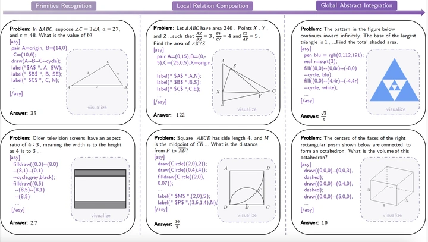
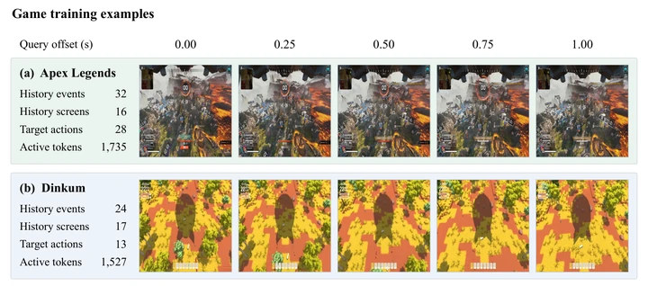
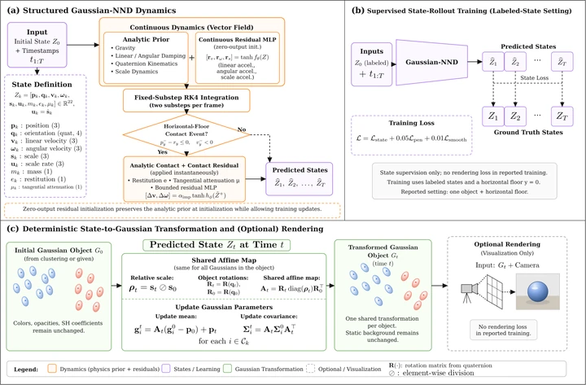
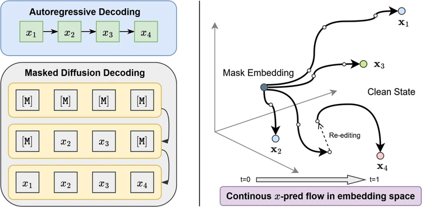

潜空间推理
在写出答案之前，模型保留了哪些信息？我研究中间状态的训练和评测，特别关注同一份状态能否支持多个不同的后续问题。
多模态学习 · 强化学习
我研究模型如何结合语言与图像进行推理，尤其关注机器人如何判断当前的推理是否足以指导下一步行动。
我在中国科学院大学获得计算机科学博士学位，之后在清华大学开展博士后研究。

在写出答案之前，模型保留了哪些信息？我研究中间状态的训练和评测，特别关注同一份状态能否支持多个不同的后续问题。
我研究机器人如何将视觉观测和语言指令转化为动作，包括怎样比较多个内部计划，以及何时结束推理并执行动作。
我希望用人的示范和机器人自己的尝试来预训练具身模型，让机器人能把指令和眼前的场景联系起来，预判自己的动作会带来什么变化。我期待它走进陌生的房间时，也能借助已有经验摸索出使用新工具的方法。
我想探索机器人遇到意外时如何作出判断。比如，杯子不在原处，它该再仔细看一眼、换个地方找，还是开口问人？我希望它能判断自己还缺什么信息，根据新线索调整计划，并记住哪些做法值得下次再试。

ACM Multimedia · 2026
MOSAIC 按目标硬件的推理延迟预算，为视觉语言模型的每一层选择注意力机制和前馈网络宽度，再通过两阶段知识蒸馏恢复模型性能。

ICML · 2026
机器人策略根据中间状态的置信度决定何时停止推理并输出动作。

ACL · 2026
冻结的语言模型生成并读取自己的连续推理表示。不同位置采用独立投影，使相邻推理步骤能够保留不同的信息。

CVPR · 2026
用不同分支处理高频边界和低频场景信息，再融合两者完成超高分辨率遥感图像分割。

ICLR · 2026
LTPO 在测试时利用模型自身的输出置信度作为奖励，针对每道新题优化潜在思维向量。

ICLR · 2026
GeoGramBench 用 500 道配有绘图代码的几何题评估语言模型的空间推理能力。例如，给出一个长方体的绘图代码，模型要算出连接六个面中心所形成的八面体的体积。

AAAI · 2025 · 口头报告
给定物体类别和边界框，FlexDataset 可以生成包含多个物体的场景图像，以及与图像对应的分割掩码、深度图等像素级标注。

arXiv · 2026
我们用游戏录像预训练机器人策略，让它预测玩家接下来的键鼠操作和画面变化，再用机器人示范微调，并在 LIBERO 的操作任务上评估迁移效果。

arXiv · 2026
NewtonGS 结合牛顿力学和从数据中学到的修正项，预测物体如何运动、如何与地面接触，再用预测的姿态和尺度驱动三维高斯场景中的物体动画。

arXiv · 2026
掩码扩散语言模型在多个解码步骤中逐步更新每个词元的表示。各位置的更新速度取决于预测置信度，模型可以随上下文逐渐明朗而修正先前的预测。